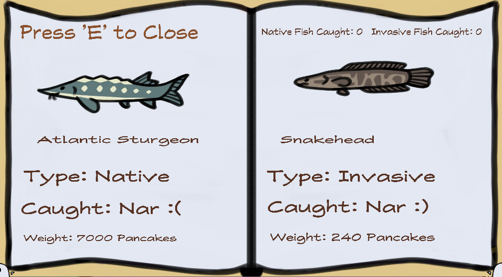
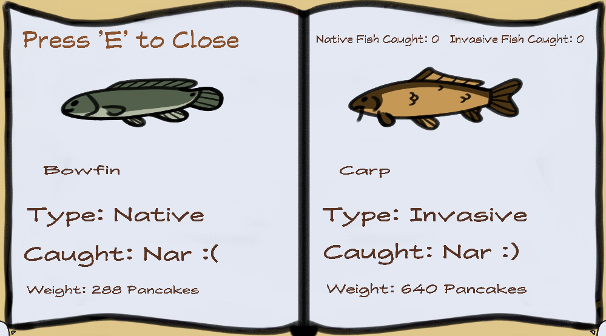

About
Fishy Business is a chill fishing experience where the fish you catch or release affect the environment around you. Your goal is to save the native species or overpopulate the lake with invasive species.
Project Info
👥 3
| ⏱ 1 week |
🧠 Godot (GDScript)
Introduction
Players explore a lake to find fishing spots, catching fish will require winning a challenging micro game! The player may choose to release the fish, or finish the micro game. Each fish caught and released changes a morality system, catching fish also satiates a quoting system. Players work on balancing their morality and fulfilling their quota, balancing the environment or choosing the money making route.


Technical Overview
Player controls a small fishing boat to explore a mysterious lake. With many fishing spots scattered through the lake, the player must catch fish to progress through the game. The fish they catch and whether they decide to keep or release them impacts the lake's ecosystem. The player must choose to either help fix the local ecosystem to save its native species from extinction, or catch enough fish to easily fulfill their quota. Native fish are worth more than invasive ones, after all.
At the top of the hud, the bar will fill up the healthier the ecosystem, the more native fish appear. The player restores health to the ecosystem by catching invasive fish species. Players can catch native fish species, but must be careful not to overfish. The spawn manager in the background is modeled after risk of rain, having a certain amount of "invasive" and "native" credits it can spawn. This results in a system that directly responds to the players actions, and created real consequences through their playthrough
Design Overview
We wanted to try making something that looks more organic so instead of pixel art we will make hand drawn sprites to emulate the feeling of old flash games. The art is also a little messy, and is rather saturated (ignoring the desaturation of the reputation system)
. Check out the
Design Doc!
What I Learned
This game was made during the first game jam I participated in, so I learned alot about time management, due to the short timeline of this project. It was also my first project in godot, so I learned alot about the ins and out of the engine!
Play on itch.io
Check out our web demo on itch.io:
Play Fishy Business on itch.io